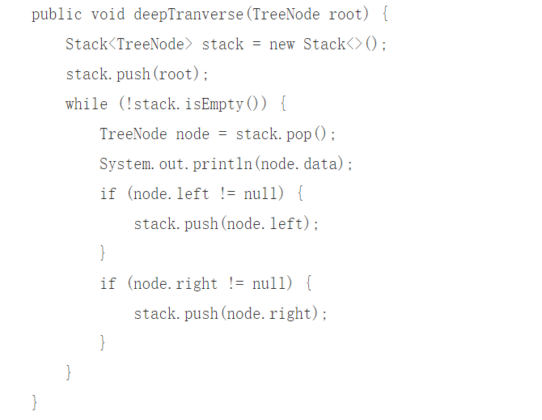

Depth first search
Theory:
-
Depth-first search algorithm is a kind of search algorithm.It traverses the nodes of
the tree at the depth of the tree, searching branches of the tree as deep as possible.
When all edges of node V have been explored, the search will trace back to the starting
node of the edge of the node V found.This process continues until all nodes reachable
from the source node have been discovered.If there are still undiscovered nodes, select
one of them as the source node and repeat the process until all nodes are accessed.
DFS is a blind search.
Code (Java):

Tips：
- Access vertex V
- The depth-first traversal of the graph is carried out from the unvisited adjacency points of V in turn. Until all vertices in the graph that are paths to V are accessed
- If there are still unvisited vertices in the graph at this time, a depth-first traversal is performed again from an unvisited vertex until all vertices in the graph have been accessed.
Complexity:
- The time complexity is O(n), because each edge is accessed at most twice
- Space complexity O(n)
Application scenarios:
- For map - like algorithms, such as navigation or maze running.
-
Take "maze" as an example. Choose a fork in the road at will.
When you find that you can't make it, go back to the last fork
in the road and choose another road to continue until you finally
find the exit. This move is a depth-first search strategy.
- It's retrospective thinking.
- The depth-first search finds a path that is not a shortest path.
{% if posts %}
Comment Area:
{% for post in posts %}
{{ post.author_id }}
{{ post.create_date }}
{{ post.comment }}
{% endfor %}
{% else %}
No post here. You can publish one first.
{% endif %}